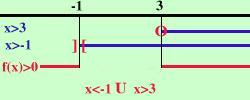

|
x - 3 -------- x + 1 Pongo sia il numeratore che il denominatore maggiori di zero x - 3 x + 1 Risolvo x x faccio lo schema x x f(x) + + + + ]-1[ - - - - - - (3) + + + + + + + + + f(x) indica l'espressione di partenza La parentesi tonda indica che l'espressione si annulla nel punto mentre la quadra indica che il valore non e' accettabile ]-1[ non e' accettabile perche' annulla il denominatore e non si puo' mai dividere per zero Io devo cercare dove l'espressione e' positiva e questo succede per x oppure in altra notazione  |